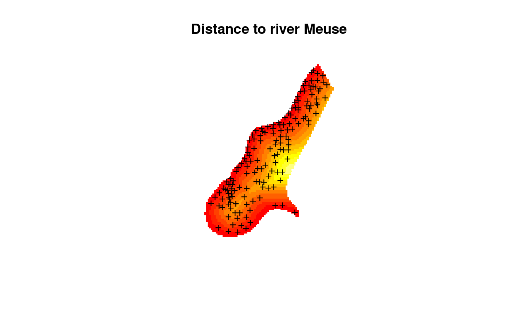
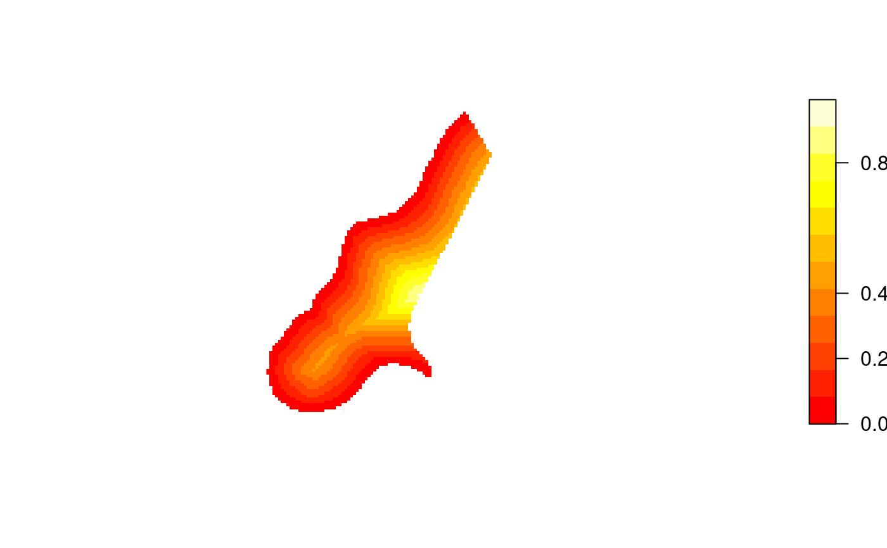

Image or contour method for gridded spatial data; convert to and from image data structure
image.RdCreate image for gridded data in SpatialGridDataFrame or SpatialPixelsDataFrame objects.
# S3 method for SpatialGridDataFrame image(x, attr = 1, xcol = 1, ycol = 2, col = heat.colors(12), red=NULL, green=NULL, blue=NULL, axes = FALSE, xlim = NULL, ylim = NULL, add = FALSE, ..., asp = NA, setParUsrBB=FALSE, interpolate = FALSE, angle = 0, useRasterImage = !(.Platform$GUI[1] == "Rgui" && getIdentification() == "R Console") && missing(breaks), breaks, zlim = range(as.numeric(x[[attr]])[is.finite(x[[attr]])])) # S3 method for SpatialPixelsDataFrame image(x, ...) # S3 method for SpatialPixels image(x, ...) # S3 method for SpatialGridDataFrame contour(x, attr = 1, xcol = 1, ycol = 2, col = 1, add = FALSE, xlim = NULL, ylim = NULL, axes = FALSE, ..., setParUsrBB = FALSE) # S3 method for SpatialPixelsDataFrame contour(x, ...) as.image.SpatialGridDataFrame(x, xcol = 1, ycol = 2, attr = 1) image2Grid(im, p4 = as.character(NA), digits=10)
Arguments
| x | object of class SpatialGridDataFrame |
|---|---|
| attr | column of attribute variable; this may be
the column name in the data.frame of |
| xcol | column number of x-coordinate, in the coordinate matrix |
| ycol | column number of y-coordinate, in the coordinate matrix |
| col | a vector of colors |
| red,green,blue | columns names or numbers given instead of the |
| axes | logical; should coordinate axes be drawn? |
| xlim | x-axis limits |
| ylim | y-axis limits |
| zlim | data limits for plotting the (raster, attribute) values |
| add | logical; if FALSE, the image is added to the plot layout setup
by |
| ... | arguments passed to image, see examples |
| asp | aspect ratio to be used for plot |
| setParUsrBB | default FALSE, see |
| useRasterImage | if TRUE, use |
| breaks | class breaks for coloured values |
| interpolate | default FALSE, a logical vector (or scalar) indicating whether to apply linear interpolation to the image when drawing, see |
| angle | default 0, angle of rotation (in degrees, anti-clockwise from positive x-axis, about the bottom-left corner), see |
| im | list with components named x, y, and z, as used for |
| p4 | CRS object, proj4 string |
| digits | default 10, number of significant digits to use for checking equal row/column spacing |
Value
as.image.SpatialGridDataFrame returns the list with
elements x and y, containing the coordinates of the cell
centres of a matrix z, containing the attribute values in matrix
form as needed by image.
Note
Providing xcol and ycol attributes seems obsolete,
and it is for 2D data, but it may provide opportunities for plotting
certain slices in 3D data. I haven't given this much thought yet.
filled.contour seems to misinterpret the coordinate values, if we take the image.default manual page as the reference.
See also
image.default, SpatialGridDataFrame-class,
levelplot in package lattice. Function
image.plot in package fields can be used to make a legend for an
image, see an example in https://stat.ethz.ch/pipermail/r-sig-geo/2007-June/002143.html
Examples
data(meuse.grid) coordinates(meuse.grid) = c("x", "y") # promote to SpatialPointsDataFrame gridded(meuse.grid) = TRUE # promote to SpatialGridDataFrame data(meuse) coordinates(meuse) = c("x", "y") image(meuse.grid["dist"], main = "Distance to river Meuse")# color scale: layout(cbind(1,2), c(4,1),1) image(meuse.grid["dist"]) imageScale(meuse.grid$dist, axis.pos=4, add.axis=FALSE)data(Rlogo) d = dim(Rlogo) cellsize = abs(c(gt[2],gt[6])) cells.dim = c(d[1], d[2]) # c(d[2],d[1]) cellcentre.offset = c(x = gt[1] + 0.5 * cellsize[1], y = gt[4] - (d[2] - 0.5) * abs(cellsize[2])) grid = GridTopology(cellcentre.offset, cellsize, cells.dim) df = as.vector(Rlogo[,,1]) for (band in 2:d[3]) df = cbind(df, as.vector(Rlogo[,,band])) df = as.data.frame(df) names(df) = paste("band", 1:d[3], sep="") Rlogo <- SpatialGridDataFrame(grid = grid, data = df) summary(Rlogo)#> Object of class SpatialGridDataFrame #> Coordinates: #> min max #> x 0 101 #> y -77 0 #> Is projected: NA #> proj4string : [NA] #> Grid attributes: #> cellcentre.offset cellsize cells.dim #> x 0.5 1 101 #> y -76.5 1 77 #> Data attributes: #> band1 band2 band3 #> Min. : 0.0 Min. : 0.0 Min. : 0.0 #> 1st Qu.:131.0 1st Qu.:138.0 1st Qu.:151.0 #> Median :196.0 Median :199.0 Median :215.0 #> Mean :182.3 Mean :185.4 Mean :192.8 #> 3rd Qu.:254.0 3rd Qu.:255.0 3rd Qu.:254.0 #> Max. :255.0 Max. :255.0 Max. :255.0